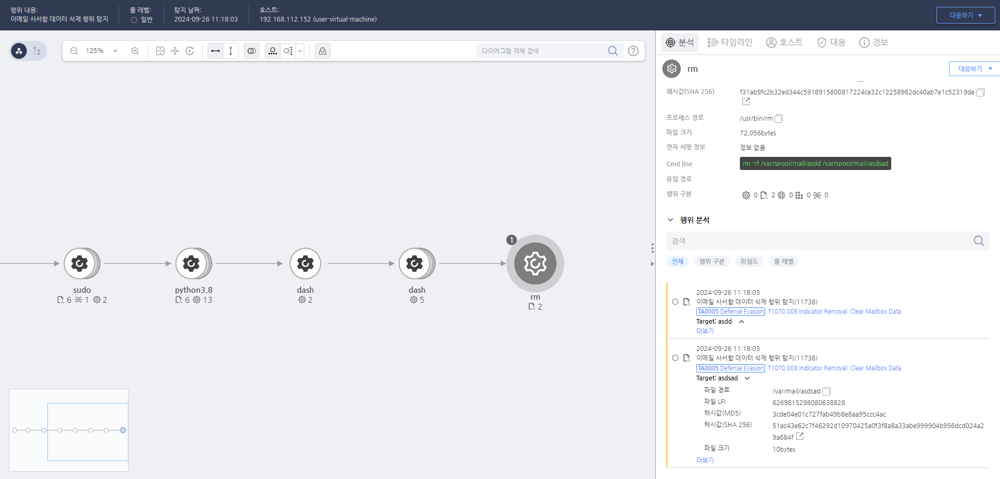

T1070.008.02 표시 제거: 메일함 데이터 지우기
D3FEND
MITRE ATT&CK 액션을 기준으로 대응 방안을 작성
Detection
모니터링을 통해 메일함을 지우는 "rm" 명령어가 있는지 확인합니다.
Detection(EDR)

https://172.18.10.125:8903/#/event/edr/66f4c6ad002dc795000015fd
Response
해당 행위를 수행한 프로세스를 종료합니다.
Mitigations
백업 및 파일 복구 시스템 구축 (M1029 - Data Backup)
- 주기적인 시스템 백업을 수행하여 중요한 시스템 파일 및 로그 파일을 안전하게 보관
- 파일 백업 및 복구 시스템을 활성화하여, 공격자가 파일을 삭제해도 백업을 통해 빠르게 복구할 수 있도록 설정
- 백업 데이터를 암호화하고 외부 네트워크로 백업을 관리하여 공격자가 백업 파일도 삭제하지 못하도록 보호
파일 무결성 모니터링 (M1047 - System Logging & Monitoring)
- 파일 무결성 모니터링(FIM) 도구를 사용하여 중요한 시스템 파일 및 로그 파일의 변경 사항을 모니터링
- 파일 삭제 및 수정 로그를 기록하고 변경된 파일 목록을 추적하여 의심스러운 파일 삭제 활동을 탐지
- 변경된 파일이나 삭제된 파일을 빠르게 감지하고 경고를 발생시켜 비정상적인 활동을 실시간으로 파악
시스템 로그 및 이벤트 기록 강화 (M1047 - System Logging & Monitoring)
- 시스템 및 보안 로그를 활성화하여 파일 삭제 이벤트 및 파일 시스템 변경 사항을 기록
- 로그 보존 기간을 설정하여 삭제된 파일에 대한 로그를 충분히 보관하고, 증거를 확보
- Sysmon(Event ID 23) 등을 활용하여 파일 시스템의 이벤트 및 삭제된 파일에 대한 상세 기록을 추적
파일 접근 및 삭제 권한 제한 (M1035 - Access Control)
- 파일 삭제 권한을 제한하여 관리자 권한을 가진 사용자만 파일을 삭제할 수 있도록 설정
- 파일 시스템 접근 제어를 강화하여 일반 사용자가 중요한 시스템 파일을 삭제하지 못하도록 방지
- 폴더 및 파일에 대한 권한 관리를 통해 중요한 파일에 대한 접근을 최소화하고 불필요한 파일 삭제를 차단
보안 솔루션 및 EDR/XDR 탐지 (M1040 - Behavior-Based Detection)
- EDR(XDR) 솔루션을 활용하여 파일 삭제 활동을 실시간으로 감지하고 경고
- 비정상적인 파일 삭제 패턴(예: 특정 디렉토리에서 대량 파일 삭제)을 탐지하고, 행위 기반 탐지로 대응
- 네트워크 및 디스크 활동을 모니터링하여 파일 삭제와 관련된 비정상적인 활동을 신속하게 추적
침해 탐지 시스템 및 경고 설정 (M1047 - System Logging & Monitoring)
- 침해 탐지 시스템(IDS/IPS)을 설정하여 파일 시스템에서 비정상적인 변경 사항을 감지하고 이를 경고
- 파일 삭제가 이루어진 시점에서 침해 탐지 및 분석 시스템을 활성화하여 의심스러운 활동을 탐지
- 로그 분석 시스템을 통해 파일 삭제와 관련된 이벤트를 추적하고 경고 시스템을 설정하여 신속한 대응을 가능하게 함
파일 삭제 및 기록 추적 솔루션 사용 (M1043 - Code Signing)
- 파일 삭제 도구 및 악성 코드가 삭제할 수 있는 경로를 추적할 수 있는 추적 솔루션을 사용
- 파일 복구 소프트웨어를 통해 삭제된 파일을 복구하고 삭제된 파일의 흔적을 확인할 수 있는 방법을 마련
- 삭제된 파일에 대한 복구 도구 및 로그 파일 복원을 통해 공격 후 흔적을 복구
시스템 무결성 검증 및 점검 (M1028 - Configuration Management)
- 시스템 무결성을 주기적으로 점검하여 파일 손상 및 삭제된 파일을 발견하고 대응
- 파일 삭제 및 변경 사항에 대한 무결성 검사를 강화하고, 시스템에서 중요한 파일의 삭제를 방지
- 정기적인 시스템 점검을 통해 파일 삭제가 시스템 보안에 미치는 영향을 평가하고 방지책을 설정
Affected Techniques
Action 실행시 함께 영향을 받는 다른 Techniqes
| D3FEND |
| D3-FIM File Integrity Monitoring |
| D3-SCA System Call Analysis |
| D3-PM Platform Monitoring |